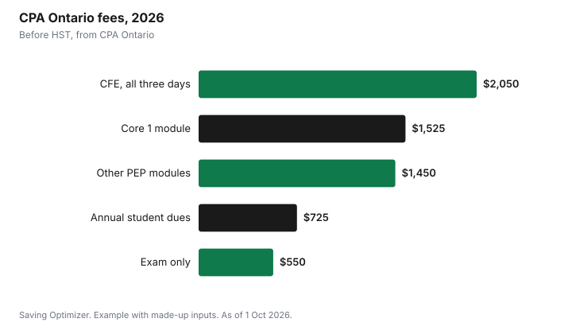

Education · Canada
Professional Exam Fees and the Tuition Tax Credit: CPA and Licensing Exams

Fees for an exam you must pass to be licensed or certified in a profession or trade can count for the federal tuition tax credit, and for the Canada training credit, if they meet the CRA's conditions. For CPA candidates in Ontario, CPA Ontario says all of its certification program courses, exams and exam rewrite fees are eligible and appear on a T2202 in your online portal; materials and administrative fees are not. Annual dues and entrance fees to a professional body are a different matter: the CRA excludes entrance fees to professional organizations. Claim the eligible amount on Schedule 11, use any unused amount later, or transfer up to $5,000 of the current year's federal amount to a parent, grandparent or spouse.
Key takeaways
- Licensing and certification exam fees can count if the exam is required for a statutory profession or a trade licence.
- Ancillary exam fees over $250 do not count unless every candidate has to pay them.
- CPA Ontario issues T2202s for its courses, exams and rewrites; materials and admin fees are not eligible.
- CPA Ontario's 2026 CFE fee is $2,050 plus HST for all three days.
- Membership-type entrance fees to professional bodies are excluded.
- Example with made-up inputs: $4,550 of eligible CPA fees in a year, with half refunded by the training credit.
The CRA's rule for licensing exams
The CRA says exam fees paid to an educational institution, professional association, provincial ministry or similar institution, to take an occupational, trade or professional exam, may be eligible for the tuition tax credit. The exam has to be required to obtain professional status recognized by federal or provincial statute, or to be licensed or certified as a tradesperson, so that you can practise the profession or trade in Canada. Ancillary fees or charges over $250 for the exam are not eligible unless all candidates must pay them.
The CRA's guide for students prints a sample receipt. The institution certifies which exam you took and when, what part of the total fee is eligible under paragraph 118.5(1)(d) of the Income Tax Act, that the exam is required for professional status or licensing, and that no part of the amount was for travel, parking, equipment of lasting value or charges other than exam fees and ancillary fees such as exam materials or ID cards. If your receipt does not show this, ask the body that charged you.
| Amount | Eligible? |
|---|---|
| Fee to write a licensing or certification exam required by statute | May be eligible |
| Exam rewrite or re-reading charges integral to a program | Eligible as part of tuition fees |
| Ancillary exam fees of $250 or less | May be eligible |
| Ancillary exam fees over $250, not required of everyone | Not eligible |
| Entrance or initiation fees to a professional organization | Not eligible |
| Travel and parking to the exam | Not eligible |
CPA Ontario's 2026 fees
CPA Ontario publishes its Professional Education Program (PEP) and Common Final Examination (CFE) fees. All are before HST. CPA Ontario also notes that the final spring CFE takes place in June 2026 and that the last September CFE will be in 2028.
| Item | Fee |
|---|---|
| Core 1 module | $1,525 |
| Core 2, elective and Capstone modules | $1,450 each |
| Examination only (core or elective) | $550 |
| Examination remark | $195 |
| Late enrolment | $200 |
| CFE, all three days | $2,050 |
| CFE, Day 1 only | $915 |
| CFE, Days 2 and 3 | $1,600 |
| Annual student dues, standard | $725 plus GST/HST |
| Annual student dues, undergraduate, co-op or internship | $365 plus GST/HST |
On its tax receipts page, CPA Ontario says all of its certification program courses, exams and exam rewrite fees are eligible for the T2202, and that under section 118.5 of the Income Tax Act it issues T2202s only for tuition fees; materials and administrative fees are not eligible. It treats all of its courses as part-time, and each course qualifies for two months on the T2202. Annual student dues are not among the fees CPA Ontario lists as eligible, and the CRA excludes entrance fees to professional organizations, so do not expect dues on your T2202.
Provincial credits and the Canada training credit
The federal tuition credit is non-refundable, so it only helps if you owe tax. CPA Ontario reminds candidates that Ontario eliminated both its tuition and education tax credits effective 4 September 2017, so Ontario residents claim only the federal amount. Other provinces have their own rules; check your provincial schedule.
The Canada training credit is refundable and also applies to fees paid to certain bodies for an occupational, trade or professional exam. If you are 26 to 65 and have room on your notice of assessment, you can claim the lesser of your limit and 50% of the eligible fees, which can return cash even in a low-tax year. See how to claim the Canada training credit.
Transfer or carry forward
The CRA says you must first use your tuition amount to reduce your own tax to zero. You can then transfer up to $5,000 of the current year's federal tuition amount, minus what you used, to a spouse or common-law partner, or to a parent or grandparent. Anything you do not use or transfer carries forward to a future year, and you must claim it in the first year you owe tax. Once carried forward, it can no longer be transferred. CPA candidates often have employer support: fees your employer paid or reimbursed cannot be claimed unless the amount is included in your income.
Example with made-up inputs
These numbers are an example with made-up inputs, using CPA Ontario's published fees. Alex, 29, pays personally for two $1,450 modules and the $2,050 CFE in 2026, for $4,950 of fees before HST; $400 of that was reimbursed by an employer and not included in Alex's income, leaving $4,550 claimable. Alex has $1,000 of Canada training credit room. Half of $4,550 is $2,275, so Alex claims the $1,000 limit as a refundable credit. The remaining tuition amount goes on Schedule 11 as usual. Alex's $725 annual dues are not part of the claim.
| Item | Amount |
|---|---|
| Two PEP modules | $2,900 |
| CFE, all three days | $2,050 |
| Less employer reimbursement not in income | −$400 |
| Eligible fees | $4,550 |
| 50% of eligible fees | $2,275 |
| Canada training credit claimed (limit) | $1,000 |
| Annual dues (not eligible) | $725 |

Steps
- Download your T2202 from your professional body's portal, or ask for an exam fee receipt in the CRA's format.
- Remove any fees your employer paid unless they were included in your income.
- Check your Canada training credit limit on your notice of assessment.
- Complete Schedule 11, including the training credit section if you have room.
- Decide whether to transfer up to $5,000 of the unused current-year amount or carry it forward.
- Keep receipts; do not send them with an electronic return.
For related credits, see transferring tuition to a parent and apprenticeship costs and grants.
Sources
- Canada Revenue Agency, Guide P105 Students and Income Tax 2025 (eligible tuition fees, exam fees, transfer and carry forward), canada.ca (Wayback copy of the page modified 6 May 2026), as of 1 Oct 2026.
- Canada Revenue Agency, Line 45350 Canada training credit, canada.ca (Wayback copy), as of 1 Oct 2026.
- CPA Ontario, CPA PEP Enrolment and Fees, CFE Schedules and Enrolment, Annual Student Dues, and Tax Receipts, cpaontario.ca, as of 1 Oct 2026.
- The candidate's details, reimbursement and limit in the example are an example with made-up inputs.
Frequently asked questions
Are professional exam fees tax deductible in Canada?
They can count for the federal tuition tax credit if the exam is required for professional status recognized by statute or for a trade licence, and ancillary fees over $250 not required of everyone are excluded.
Are CPA exam fees eligible for the tuition tax credit?
CPA Ontario says all of its certification program courses, exams and exam rewrite fees are eligible for the T2202. Materials and administrative fees are not.
How much is the CPA CFE in Ontario?
CPA Ontario lists $2,050 plus HST for all three days, $915 for Day 1 and $1,600 for Days 2 and 3.
Are CPA annual dues tax deductible as tuition?
They are not among the fees CPA Ontario lists as eligible, and the CRA excludes entrance fees to professional organizations.
Can exam fees count for the Canada training credit?
Yes, fees paid to certain bodies for an occupational, trade or professional exam can count if they are eligible for the tuition credit.
Does Ontario have a tuition tax credit?
No. CPA Ontario notes Ontario eliminated its tuition and education tax credits effective 4 September 2017.
Researched and drafted with AI assistance and fact-checked against official Canadian sources. How we create content.
Disclosure: Saving Optimizer may earn a commission if a partner link is added later, such as an exam prep or tax software offer type. No partnership is claimed on this page. Education only, not tax advice.